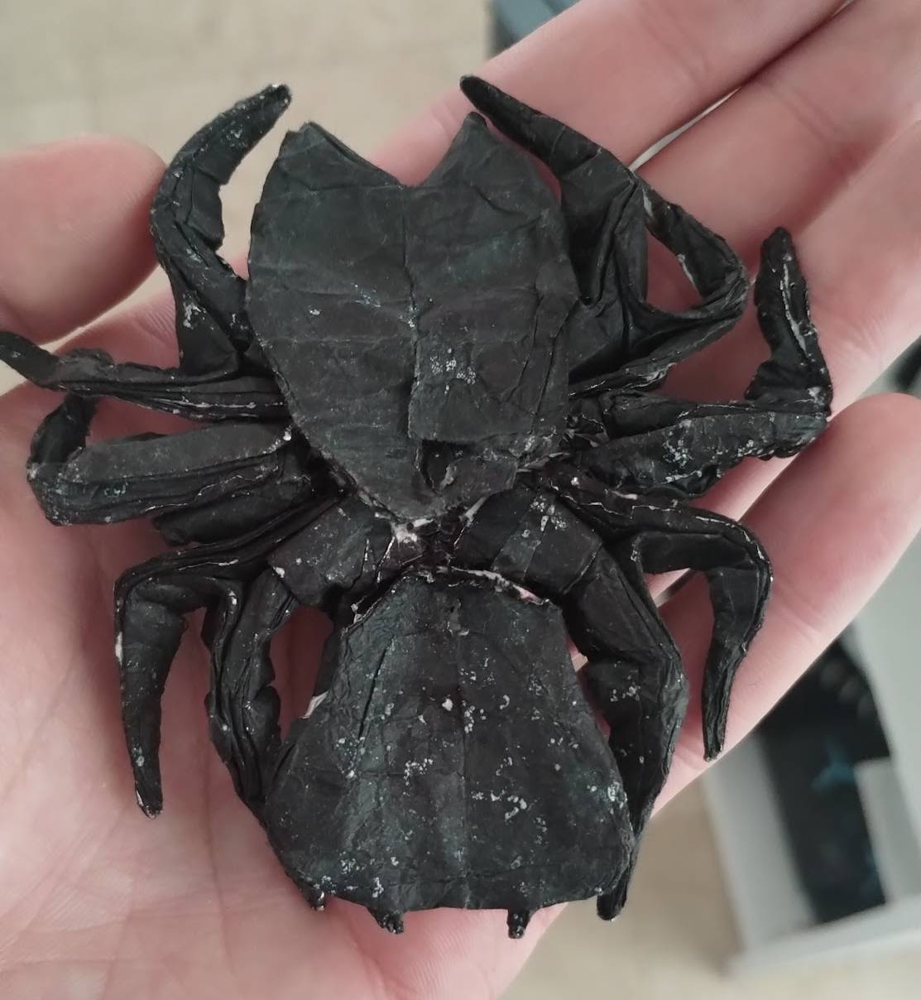
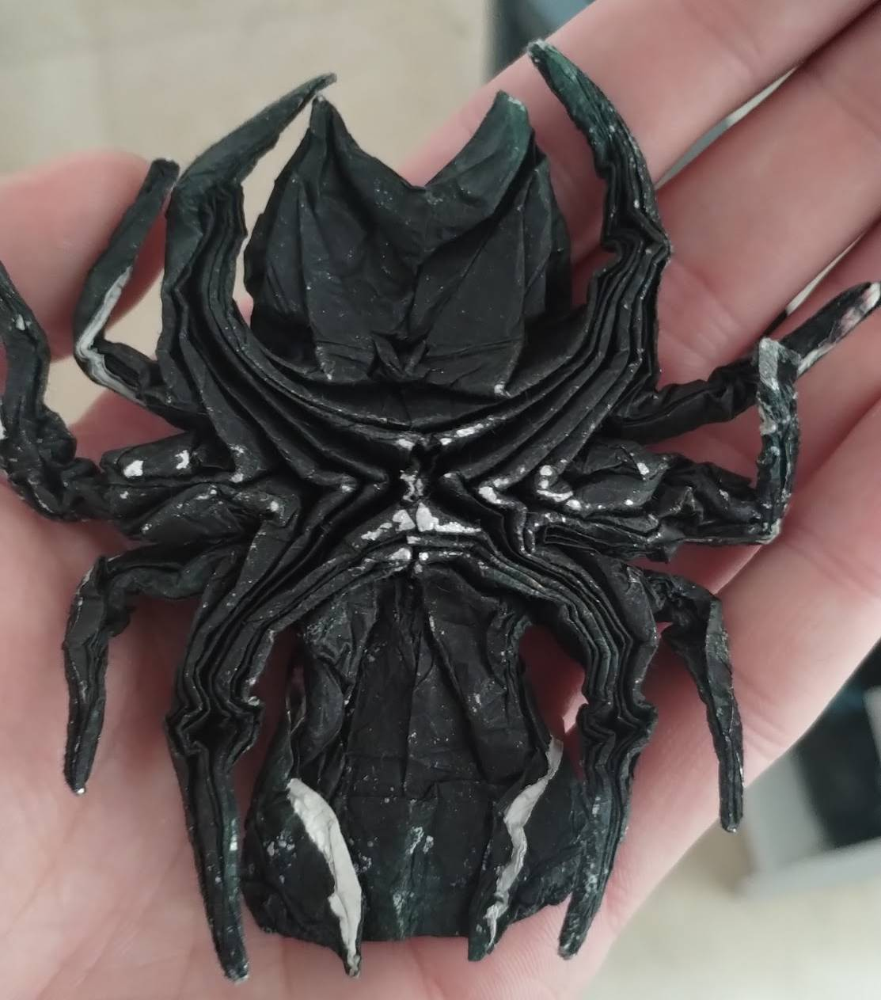
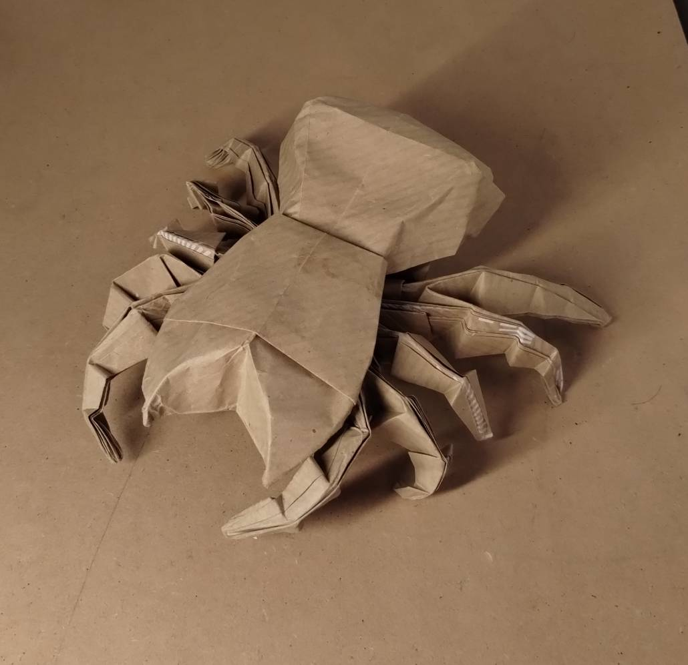
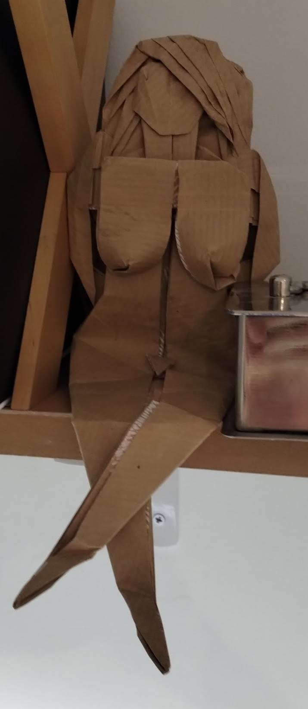
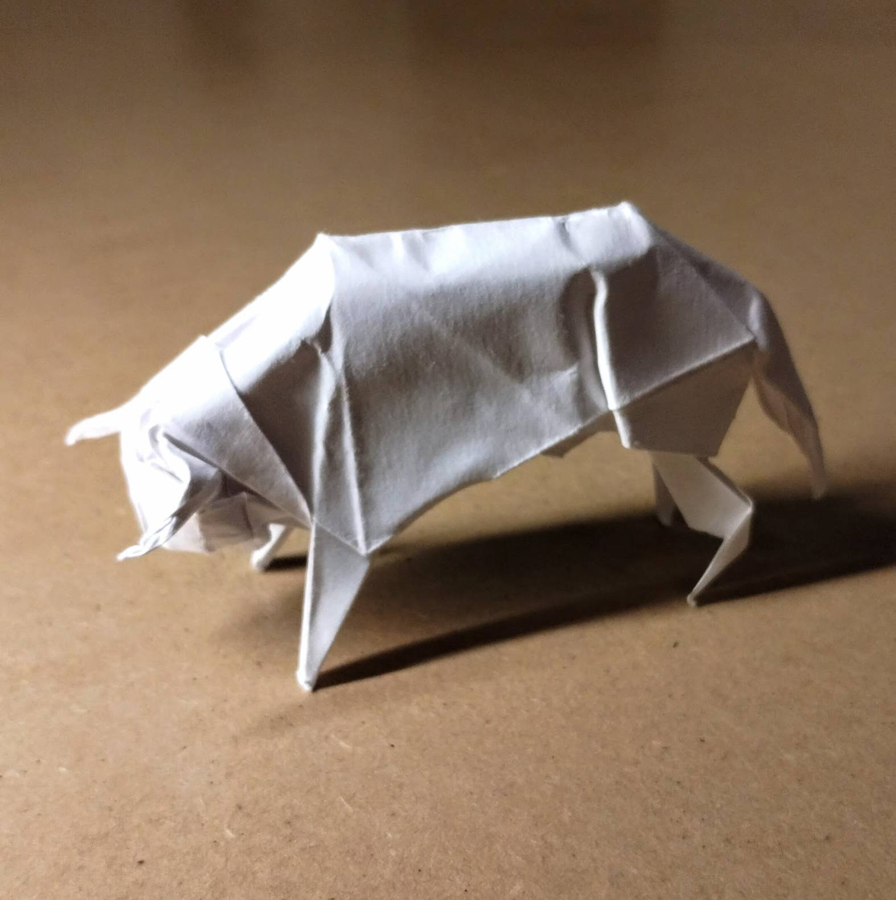

Origami
El origami es una de las actividades que practico desde que tengo como cinco o seis años, y por eso guarda un lugar especial en mis recuerdos. Dejo aquí abajo algunas interpretaciones de las figuras de autor que me gustan.
La primera de todas es la Migale de Manuel Sirgo, un modelo que guardo a buen recaudo desde el año 2012 y al que tengo mucho cariño a pesar de estar ya un poco maltratado. Por aquel entonces ya fabricaba mi propio papel sándwich y aspiraba a ser "papiroflexiador" profesional.


Otra interpretación distinta de la migale de un día que cayó entre mis manos un rollo de papel de regalo. Ese mismo día también plegué a la mujer de Papiroflexia Bicolor.


Seguramente mi figura favorita sea el toro de Gabriel Álvarez. Es un modelo sencillo que captura claramente la esencia de lo que representa, tanto en postura como en proporciones. Me costó plegar bien la cabeza para no perder el equilibrio general.

Contacto
Correo: miguel.laredo@alumnos.upm.es
LinkedIn: linkedin.com/in/miguel-laredo
GitHub: github.com/laredo02